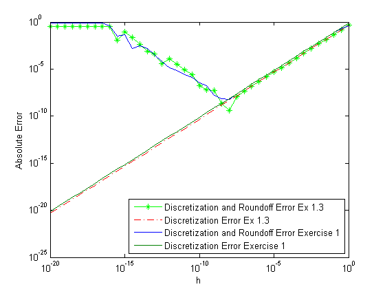
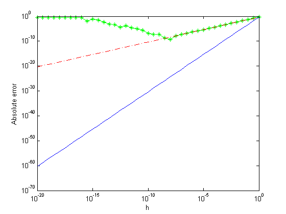
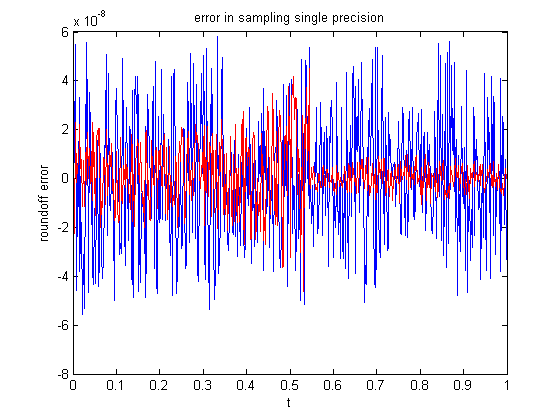

Homework 1 Shannon Zoch
Contents
- 1) Ch1.1 Approximating Discretization Error
- 2. Chapter 1, problem 2
- 3. Chapter 1, problem 3
- 4. Chapter 2, problem 6
- 5. Chapter 2, problem 12
- 6. Chapter 3, problem 2
- 7. Implement Newton’s method for a generic function f (x) in a manner
- 8. Chapter 3, problem 5 (you may use your implementation from
- 9. Chapter 3, problem 15
- 10. Chapter 3, problem 18 Bisection vs Newton vs Secant
1) Ch1.1 Approximating Discretization Error
calculations similar to Example 1.3 for approximating the derivative of the function f(x)=exp(-2x) evaluated at x0=0.5. Observe similarities and differences by comparing graph to example 1.3 graph.
clear close all clc % Build graph 1.3 (code from A First Course in Numerical Methods by % URI M. Ascher, example 1.3) x0=1.2; f0=sin(x0); fp=cos(x0); i=-20:0.5:0; h=10.^i; err=abs(fp-(sin(x0+h)-f0)./h); d_err=f0/2*h; figure(1) loglog(h,err,'g-*'); hold on loglog(h,d_err,'r-.'); xlabel('h') ylabel('Absolute error'); % find derivatives syms x f = exp(-2*x); fprime=diff(f); fprimeprime=diff(exp(-2*x),2); fppp=diff(exp(-2*x),3); f=matlabFunction(f); fprime=matlabFunction(fprime); fprimeprime=matlabFunction(fprimeprime); fppp=matlabFunction(fppp); % Calculations for example 1 x= 0.5; i=-20:0.5:0; h=10.^i; err=abs(fprime(x)-(f(x+h)-(f(x)))./h); d_err=h/2*abs(fprimeprime(x)); loglog(h,err,h,d_err) xlabel('h'); ylabel('Absolute Error'); legend('Discretization and Roundoff Error Ex 1.3',... 'Discretization Error Ex 1.3',... 'Discretization and Roundoff Error Exercise 1',... 'Discretization Error Exercise 1',4) % Graph Comparison: % The graphs are similar with slight variations. The Discretization error % is practically exactly the same but the Roundoff error varies slightly. % For exercise 1 the roundoff
2. Chapter 1, problem 2
Carry out derivation and calculations analogous to those in Example 1.2, using the expression (f(x0+h)-f(x0-h))/2h for approximating the first derivative f'(x0). Show that the error is O(h^2). More precisely, the leading term of the error is -h^2/3(f'''(x0)) notequal to 0. Note: There is typo in the solution, you should get that the leading error term is -h^3/6(f'''(x0)).
3. Chapter 1, problem 3
Carry out similar calculations to those of Example 1.3 using the approximation from Exercise 2. Observe similarities and differences by comparing your graph against that in Figure 1.3.
clear close all clc % Build graph 1.3 (code from A First Course in Numerical Methods by % URI M. Ascher, example 1.3) x0=1.2; f0=sin(x0); fp=cos(x0); i=-20:0.5:0; h=10.^i; err=abs(fp-(sin(x0+h)-f0)./h); d_err=f0/2*h; figure(1) loglog(h,err,'g-*'); hold on loglog(h,d_err,'r-.'); xlabel('h') ylabel('Absolute error'); % find derivatives syms x f = exp(-2*x); fprime=diff(f); fprimeprime=diff(exp(-2*x),2); fppp=diff(exp(-2*x),3); f=matlabFunction(f); fprime=matlabFunction(fprime); fprimeprime=matlabFunction(fprimeprime); fppp=matlabFunction(fppp); x= 0.5; i=-20:0.5:0; h=10.^i; dd_err=-h.^3/6*fppp(x); loglog(h,dd_err) % This calculated values accuracy degrades much quicker then in example 3.1
4. Chapter 2, problem 6
Write a MATLAB program that receives as input a number x and a parameter n and returns x rounded to n decimal digits. WRite your program so that it can handle an array as input, returning an array of the same size in this case. Use your program to generate numbers for Example 2.2, demonstrating the phenomenon depicted there without use of single precision.
Following Example 1.5, assess the conditioning of the problem of evaluating g(x)=tanh(cx)=(exp(cx)-exp(-cx))/(exp(cx)+exp(-cx)) near x=0 as the positive parameter c grows. Example outputs from your function: x n = 0 n = 1 n = 4 102.94 100 100 100.94 0.00123456 0.001 0.0012 0.0012346 -0.00123456 -0.001 -0.0012 -0.0012346 10609235 10000000 11000000 106090 From text Example 2.2
close all clc t=0:.002:1; tt=exp(-t).*(sin(2*pi*t)+2); rt=single(tt); [a b]=rounder(tt,7); at=b; round_err=(tt-rt)./tt; myround_err=(tt-at)./tt; figure(2) plot (t,round_err,'b-',t,myround_err,'r-'); title('error in sampling single precision') xlabel('t') ylabel('roundoff error')
5. Chapter 2, problem 12
For the following expressions, state the numerical difficulties that may occur, and rewrite the formulas in a way that is more suitable for numerical computation:
close all clc % (a) sqrt(x+1/x)-sqrt(x-1/x), where x >> 1. % as x grows such a tiny number will be added to the first square root % and subtracted in the second that roundoff error will soon result in a % zero answer, but if we multiply by sqrt(x+1/x)/sqrt(x+1/x) (identity % one) we will end up with (x+1/x)/sqrt(x+1/x)-sqrt(x-1/x). % (b) sqrt(1/a^2+1/b^2), wher a~0 and b~1. For this problem the first % term will rapidly approach infinity while the second term will approach % 1.
6. Chapter 3, problem 2
Consider the polynomial function [from J.W. Demmel, Applied Numerical Linear Algebra, SIAM, Philadelphia, 1997.] f(x)=(x-2)^9 =x^9-18x^8+144x^7-672x^6+2016x^5-4032x^4+5376x^3-4608x^2+2304x-512 (a) Write a MATLAB script which evaluates this function at 161 equidistant points in the interval [1.92,2.08] using two methods: (i.) Apply nested evaluation (cf. Example 1.4) for evaluating the polynomial in the expanded form x^9-18x^8+... (ii.) Calculate (x-9)^9 directly. Plot results on two seperate figures. (b) Explain the difference b/t the two graphs. (c) Suppose you were to apply the bisection routine from Section 3.2 to find a root of this function, starting from the interval [1.92,2.08] and using the nested evaluation method, to an absolute tolerance 10^-6. Without computing anything, select the correct outcome: i). The routine will terminate with a root p satisfying p-2<=10^-6. ii). The routine will " " with a root p not satisfying p-2<=10^-6. iii). The routine will not find a root. Justify your choice in one short sentence.
7. Implement Newton’s method for a generic function f (x) in a manner
similar to way we implemented bisection in class. You should also convince me that your implementation is correct by running it on a few test cases and showing that it converges at the expected rate.
8. Chapter 3, problem 5 (you may use your implementation from
Problem 7). Write a MATLAB script for computing the cube root of a number, x=cuberoot(a), with only basic arithmetic operations using Newton's method, by finding a root of the function f(x)=x^3-a. Run your program for a=0,2,10. For each of these casesm start with and initial guess reasonable close to the solution. As a stopping criterion, require the function value whose root your are searching to be smaller than 10^-8. Print out the values of xsubk and f(xsubk) in each iteration. Comment on the convergence rates and explain how they match your expectations.
9. Chapter 3, problem 15
For x > 0 consider x+ln(x)=0 a reformulation of equation(Example 3.4 g(x)=exp(-x)) a)Show analytically that there is exactly one root, 0<x*<inf Using iterative plug and chug
close all clc format short lnof0=log(0) lnof1=log(1) % Since ln(0) is negative infinity and ln(1)=0+1=1 and since all subsequent % values of x will continue to increase the root must lie between 0 and 1. x=0:0.1:1; y=x+log(x); table=[x' y'] % A short iteration between 0 and 1 shows that the root must lie between .5 % and .6 % b)Plot a graph of the function on interval [0.1,1]. x=0.1:0.001:1; figure(3) plot(x,x+log(x)) xlabel('x') ylabel('y') % c)As seen in graph, root is b/t .5 and .6. Write MATLAB root finding % routine using: % i)bisection method on interval [.5,.6]. Why is this iterval choice % valid? (For Bisection you may use the code we developed in class.) bisection('fex',0.5,0.6,1.e-10) % ii)Newton's method, with x0=0.5. %For each method: % Use |xsubk-xsub(k-1)|<10^-10 as a convergence criterion. % Print out the iterates and show the progress in the number of correct % decimal digits throughout the iteration. % Explain the convergence behavior and how it matches theoretical % expectations.
lnof0 =
-Inf
lnof1 =
0
table =
0 -Inf
0.1000 -2.2026
0.2000 -1.4094
0.3000 -0.9040
0.4000 -0.5163
0.5000 -0.1931
0.6000 0.0892
0.7000 0.3433
0.8000 0.5769
0.9000 0.7946
1.0000 1.0000
Attempted to access f(0.5); index must be a positive integer or logical.
Error in bisection (line 4)
if f(a)*f(b) > 0
Error in Homework1 (line 213)
bisection('fex',0.5,0.6,1.e-10)
10. Chapter 3, problem 18 Bisection vs Newton vs Secant
Consider finding the root of a given non-linear function f(x), known to exist in a given interval [a,b], using one of the following three methods: bisection, Newton, and secant. For each of the following instances, one of these methods has a distinct advantage over the other two. Match problems and methods and give brief justification.
%a)f(x)=x-1 on interval [0,2.5] Since this function is continuous and f' %can be easily evaluated Newton's method is best. %b)f(x) is given in Figure 3.5 on interval [0,4] (downward zig-zag [1,-.6] %Since function is continuous but not smooth Bisection is best %c)f is an element of C^5[0.1,0.2], the derivatives of f are all bounded in %magnitude by 1, and f'(x) is hard to specify explicitly or evaluate. %Since f' cannot be easily evaluated the secant method is best in this case